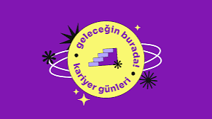

Kariyer Günleri 2026

Etkinlik Bilgileri
- Kategori:
- Seminer
- Tarih ve Saat:
- Yer:
- C Blok Konferans Salonu
- Kontenjan:
- 120 Kişi
Ayrıntılı Açıklama
Üniversitemiz tarafından düzenlenen bu yılki Kariyer Günleri'nde, sektörün önde gelen temsilcileri öğrencilerimizle buluşuyor. Etkinlik boyunca staj olanakları, mülakat teknikleri ve mezuniyet sonrası iş fırsatları üzerine paneller gerçekleştirilecektir. Tüm öğrencilerimiz davetlidir.
Listeye Dön